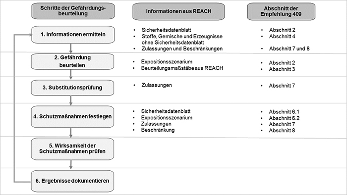

Die vorliegende Empfehlung behandelt das Zusammenwirken bzw. die Schnittstellen der REACH- und Arbeitsschutzgesetzgebung. Sie orientiert sich dabei am Ablauf der Gefährdungsbeurteilung und den Vorgaben der TRGS 400 "Gefährdungsbeurteilung für Tätigkeiten mit Gefahrstoffen". Insofern stellt die vorliegende Empfehlung die Perspektive des Arbeitsschutzes in den Mittelpunkt und gibt Hilfestellungen, wie vom Arbeitgeber Informationen auf Basis der REACH-Verordnung für die Gefährdungsbeurteilung genutzt werden können und wann diese einen Anlass zu einer Aktualisierung der Gefährdungsbeurteilung geben. Der für den Arbeitsschutz verantwortliche Arbeitgeber soll hiermit in die Lage versetzt werden, die durch REACH verfügbaren Informationen und Vorgaben zur Erfüllung seiner Arbeitsschutzverpflichtungen zu nutzen. Hinweise zur Erfüllung von REACH-Pflichten gibt diese Empfehlung dem Arbeitgeber dagegen nur punktuell.
Gemäß GefStoffV hat der Arbeitgeber im Rahmen einer Gefährdungsbeurteilung festzustellen, ob die Beschäftigten Tätigkeiten mit Gefahrstoffen ausüben oder ob bei Tätigkeiten Gefahrstoffe entstehen oder freigesetzt werden können. Die Vorgehensweise zur Durchführung der Gefährdungsbeurteilung beschreibt die TRGS 400. Eine wesentliche Grundlage für die Gefährdungsbeurteilung stellt die Ermittlung und Zusammenstellung aller relevanten Informationen dar. Die wichtigste Quelle in diesem Zusammenhang ist das Sicherheitsdatenblatt. Die Vorgaben für die Inhalte des Sicherheitsdatenblatts sind in der REACH-Verordnung festgelegt. Das Sicherheitsdatenblatt muss gemäß REACH-Verordnung vom Lieferanten dem nachgeschalteten Anwender oder Händler zur Verfügung gestellt werden. Damit stehen dem Arbeitgeber zur Erfüllung seiner Pflichten nach GefStoffV diese Informationen zur Verfügung.
Darüber hinaus können sich unmittelbar Verpflichtungen aus der REACH-Verordnung für den Arbeitsschutz ergeben, die vom Arbeitgeber umgesetzt werden müssen. Dies sind insbesondere Vorgaben aus Beschränkungen und Zulassungen, die entsprechend Einfluss auf die Gefährdungsbeurteilung haben.
In Bezug auf die Festlegung von Schutzmaßnahmen hat der Arbeitgeber sowohl Vorgaben aus der GefStoffV als auch aus der REACH-Verordnung umzusetzen. Die ausschließliche Übernahme von Schutzmaßnahmen auf der Basis von Informationen aus der REACH-Verordnung (Sicherheitsdatenblatt, Beschränkungen, Zulassungen) kann die arbeitsplatz- und tätigkeitsspezifische Festlegung von geeigneten Schutzmaßnahmen auf Grundlage der Gefährdungsbeurteilung nicht ersetzen.
Für einzelne Schritte der Gefährdungsbeurteilung können Informationen aus REACH, z. B. aus Sicherheitsdatenblättern, Zulassungen oder Beschränkungen genutzt werden. In Abbildung 1 wird dargestellt, welche Informationen für die verschiedenen Schritte der Gefährdungsbeurteilung herangezogen werden können und in welchem Abschnitt der Empfehlung 409 dies behandelt wird. Zur Überprüfung der Wirksamkeit von Schutzmaßnahmen und zur Dokumentation ist die REACH-Verordnung in der Regel nicht geeignet. Zu diesen Schritten sind insbesondere die TRGS 400 und die TRGS 500 "Schutzmaßnahmen" heranzuziehen.

Abbildung 1: Zuordnung der Informationen aus der REACH-Verordnung zu den Schritten der Gefährdungsbeurteilung